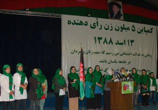

پذيرش > تریبون > گزارش كمپين > کمپینی برای 5 میلیون زن افغان؛ گفتگو با شیلا صمیمی فعال حقوق زنان در افغانستان/ رها (...)


 کمپینی برای 5 میلیون زن افغان؛ گفتگو با شیلا صمیمی فعال حقوق زنان در افغانستان/ رها عسگری زاده - زینب محقق کمپینی برای 5 میلیون زن افغان؛ گفتگو با شیلا صمیمی فعال حقوق زنان در افغانستان/ رها عسگری زاده - زینب محقق
6 آبان 1388 - - نسخه قابل چاپ
تغییر برای برابری: دومین دوره انتخابات ریاست جمهوری افغانستان در حالی برگزار شد که دو تن از کاندیداهای این انتخابات، زن بودند و علاوه بر آن فعالان حقوق زنان در افغانستان برای تشویق زنان به مشارکت بیشتر در انتخابات، اقدام به تشکیل دو کمپین 50% و 5 میلیون رای دهنده کرده بودند.
کمپین 5 میلیون که باتوجه به 5 میلیون زن واجد شرایط برای رای دادن در کشور افغانستان راه اندازی شده، سمیناری با همکاری نهادهای بین المللی در خیمه لویه جرگه برگزار کرد که در آن افراد مختلف ازجمله حسن بانو غضنفر، وزیر امور زنان افغانستان و شاهده حسین یکی از فعالان حقوق زنان در ولایت قندهار با ارائه سخنرانی هایی از زنان افغان درخواست کردند تا با مشارکت در انتخابات و اثبات حضور خود در صحنه های اجتماعی و سیاسی در تعیین سرنوشت خود نقش داشته باشند.
در همین مورد با خانم شیلا صمیمی، یکی از اعضای کمپین 5میلیون گفتگویی انجام دادیم که در ادامه می خوانید:

خانم صمیمی این کمپین توسط چه کسانی و در چه تاریخی آغاز به کار کرد؟
این کمپین از سوی شبکه ی زنان افغان (AWN) راه اندازی شده است. این شبکه یک سازمان غیردولتی است که هفتاد "NGO" در آن عضویت دارند و علاوه بر آن بیش از 5هزار عضو فرعی دارد. این شبکه یک ماه قبل از برگزاری کمپین 5میلیون ، آغاز به فعالیت کرده است و اولین برنامه آن در روز چهارم اگوست در کابل و برنامه های مشابهی در 16 ولایت دیگر افغانستان در تاریخ 17 اگوست برگزار شد.
بسته هایی در طول سمینار بین زنان توزیع شد. در مورد محتوای این بسته ها توضیح می دهید؟
این بسته ها به عنوان هدیه و شامل کیف، کلاه، شال و اوراق تبلیغاتی در مورد اشتراک زنان در انتخابات است تا از این طریق زنان را تشویق کنیم تا در انتخابات شرکت کنند. روی همه این هدیه ها این پیام نوشته شده بود که رای ما، سرنوشت ماست.
در این سمینار، تعداد زیادی از زنان با شالهای سبز شرکت کرده بودند. دلیل انتخاب رنگ سبز برای شالها چه بود؟
در این شال ها از سه رنگ پرچم افغانستان استفاده شده و غالب بودن رنگ سبز در شالها به این دلیل است که این رنگ، سمبل صلح، امنیت و رفاه است.
هزینه های این کمپین چطور تامین شد؟
هزینه این برنامه از سوی دفتر IFES یا بنیاد بین المللی نظام های انتخاباتی تامین شده است.

آیا این کمپین پس از پایان دومین دوره انتخابات ریاست جمهوری به فعالیتش خاتمه می دهد؟
خیر، انتخابات پارلمان افغانستان در راه است و ما به برنامه هایمان و ارتباط گیری با زنان افغان ادامه می دهیم.
کمپین پنج میلیون، موضع گیری خاصی نسبت به نتیجه انتخابات داشت؟
پس از اعلام نتیجه ی انتخابات این کمپین هم موضع خود را اعلام کرده است نه اینکه از فردی مشخصی دفاع کند بلکه از حضور زنان در انتخابات تشکر کرده و به انها تبریک گفته است که توانسته اند در انتخابات و تعیین سرنوشت خود سهم داشته باشند.
اما در اصل هدف اعلامیه ای که از سوی این کمپین منتشر شد، بیان این سه موضوع بوده است:
نبود کارمندان زن در مراکز رای دهی که باعث شد تا بسیاری از زنان از رفتن به مراکز رای دهی خودداری کنند
رای دادن مردان به جای همسر و دیگر زنان خانواده و در حقیقت محروم کردن زنان از حق رای.
و مساله امنیت که این موضوع هم بر مشارکت زنان در انتخابات تاثیر داشته است.
مشارکت زنان افغان در این انتخابات رضایت آمیز بود؟
بله. به نظر ما واقعا رضایت آمیزبود. ما می خواهیم نقش زنان در انتخابات مثل کشورهای دیگر و یا حداقل مثل کشورهای همسایه همچون ایران و پاکستان پررنگ باشد.
ارسال به
بالاترین
،
توییتر
،
فریندفید
،
فیسبوک
در همين بخش :
 دهمین دورۀ مراسم تندیس صدیقه دولت آبادی ۱۳۹۲ دهمین دورۀ مراسم تندیس صدیقه دولت آبادی ۱۳۹۲
کارت پستالهایی به بهانهی هشت مارس و به یاد همهی مبارزین راه برابری
بیانیه بیش از 350 تن از مدافعان حقوق زنان به مناسبت روز جهانی زن؛ زنان هر روز فرودستتر میشوند
لباسی که برای تن ما دوخته اند! /اعظم بهرامی
چالشها و چشمانداز فعالیت مدنی زنان
ديگر بخش ها :
طرح یک میلیون امضا
|
مقالات
|
سایت نوشته ها
|
اخبار
|
گزارش كمپين
|
گفت و گو
|
علیه سکوت
|
كوچه به كوچه
|
نامه های شما
|
گزارش ویژه
|
گفتگو با اعضا
|
ویژه سالگرد کمپین
|
تصویر برابری
|
دل آرام علی
|
تریبون
|
مقالات
|
تاریخ شفاهی
|
خارج از چارچوب
|
کتابخانه
|
درباره کمپین
|
کمپین در شهرها
|
کمپین در بند
|
صدای تغییر
|
ویژه 22 خرداد
|
لایحه حمایت از خانواده
|
گالری
|
عشا مومنی
|
امیر یعقوبعلی
|
خدیجه مقدم
|
راحله عسگری زاده و نسیم خسروی
|
پروین اردلان،جلوه جواهری، مریم حسین خواه، ناهید کشاورز
|
زینب پیغمبرزاده
|
سعیده امین، سارا ایمانیان، محبوبه حسین زاده، ناهید کشاورز و همایون نامی
|
احترام شادفر
|
نسیم سرابندی زاده،فاطمه دهدشتی
|
وبلاگ مهمان
|
پرونده خرم آباد
|
دستگیری ها
|
مریم مالک
|
پرستو اللهیاری
|
مهرنوش اعتمادی
|
سمیه رشیدی
|
Other Languages
|
همراهان
|
«فراخوان کمپین ده روز با بهاره هدایت»
| English
|